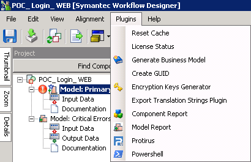
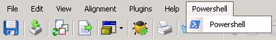

In this Article I'm going to explain how to create a simple Plugin with the basic properties and show some infomation about the current Project.
Table of Contents
If you haven't already, setup the basic project using the previous article.
As we have the bare bones configured we now need to start writing some code.
IMAGE
Everybody loves an image!
To add an Image to the project (Protirus.Workflow.Protirus.png), copy this to your Project. This can be the Menu image.
Change the Build Action to Embedded Resource

Create some variables for your Image name etc. (We will move these to Resources later.)
Variables
Assembly _assembly;
Stream _imageStream;
private string imageIcon = @"Protirus.Workflow.Protirus.png";
private string name = @"Protirus";
As we are using the Assembly we will need to add another using statement.
using System.Reflection;
To add it implement the Image method.
public Image Image
{
get
{
_assembly = Assembly.GetExecutingAssembly();
var currentNamespace = _assembly.GetName().Name; //@"Protirus.Workflow.Plugins"
//Debug.Print(currentNamespace);
string resource = string.Format(@"{0}.{1}", currentNamespace, imageIcon);
_imageStream = _assembly.GetManifestResourceStream(resource); //imageIcon
return new Bitmap(_imageStream); //Bitmap.FromStream(stream);
}
}

If you don't want an image
public Image Image
{
get
{
return null;
}
}
You could use one of the Cached Images:
public Image Image
{
get
{
return CachedImages.GetImage("LogicBase.Tool.Images.Action.BusinessModelPlugin.png");;
}
}
Now implement the rest of the IPluginUI methods.
GetMenuPosition
public int GetMenuPosition(string[] names)
{
return -1;
}
The index where this plugin should be inserted. Can be -1 to add the plugin at the end of the menu.
GetToolBarPosition
public int GetToolBarPosition(string[] names)
{
return -1;
}
The index where this plugin should be inserted.Can be -1 to add the plugin at the end of the toolbar.
ShowInMenu
public bool ShowInMenu
{
get { return true; }
}
Gets a value indicating if the plugin should be displayed in the menu.
ShowInToolBar
public bool ShowInToolBar
{
get { return false; }
}
Gets a value indicating if the plugin should be displayed in the toolbar.
As we are making a Project Plugin we can use data from the Project in the PerformAction method using the project variable.
public void PerformAction(AbstractOrchestrationProject project)
{
MessageBox.Show("project action on project " + project.MainFile.FullName + "\n Directory: " + project.MainFile.DirectoryName);
}
Fullname
E:\Program Files\Symantec\Workflow\WorkflowProjects\POC_Login_WEB\POC_Login_WEB.SymWorkflow
Directory
E:\Program Files\Symantec\Workflow\WorkflowProjects\POC_Login_WEB
There are a lot of properties you can get from the class 'AbstractOrchestrationProject', look into that for things that could be useful.
Finally the original IPlugin/IProjectPlugin methods
Name
public string Name
{
get { return name; }
}
ToolTip
public string ToolTip
{
get { return "test tooltip"; }
}
MenuLocation
For the Menu Location set it to "Plugins" to show with the other Plugins.
public string MenuLocation
{
get { return "Plugins"; }
}
If you give it another name ("Powershell") it will show up as its own Menu item.

MenuShortcut
public Shortcut MenuShortcut
{
get { return Shortcut.None; }
}
SeparatorAfter
public bool SeparatorAfter
{
get { return false; }
}
Build the project to make sure there are no errors.